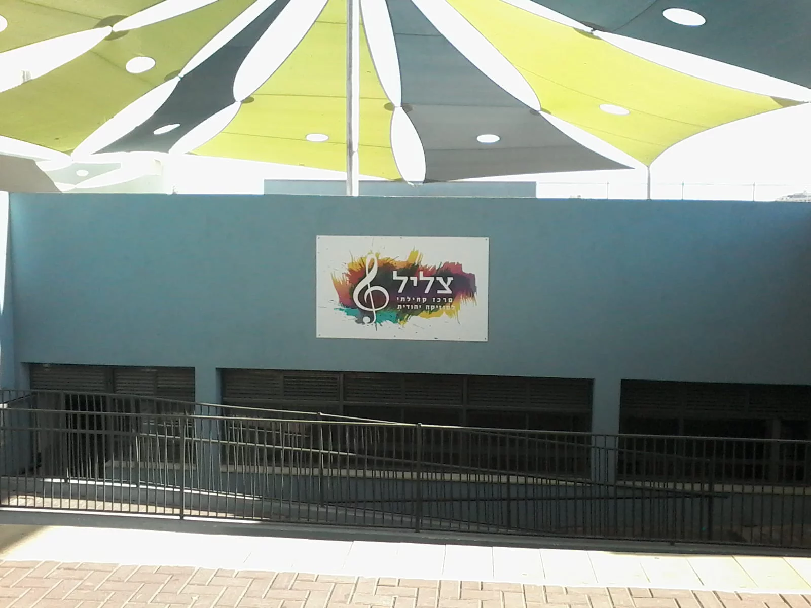

| דף הבית | מי אנחנו | חוויות ואירועים במרכז | מה הכלי שלי? | עוד על כלי התזמורת |
|---|

מרכז 'צליל' הינו בית ספר ללימדי מוזיקה כלליים ונגינה בכלי נגינה שונים ברמה גבוהה מתוך חוויה והנאה באווירה יהודית ומעצימה.
במרכז מתקיימים שיעורי נגינה מגוונים: גיטרה, כינור, פסנתר, תופים, קלרינט, סקסופון, חליל צד, קמנצ'ה, טרומבון ופיתוח קול.
שיעורי הנגינה יתקיימו במתכונת זוגית (או עד שלושה תלמידים) או פרטנית לפי בחירתכם.
כמובן שמעבר ללמידה בנגינה על הכלי, ירכשו התלמידים ידע בתיאוריה ובהעשרה מוזיקלית.
בנוסף לשיעורי הנגינה כל תלמיד זכאי לשיעור שבועי קבוצתי של תאוריה והעשרה מוזיקלית.
מלבד כל אלו יוכל כל תלמיד להצטרף במהלך השנה או לקראת הקונצרט להרכב מוזיקלי,
בו ילמד לנגן בהרמוניה ובתיאום עם כלים נוספים מתוך עבודת צוות משותפת, בהנחיית המורים לנגינה.
איך אבחר את הכלי שלי?
עוד על כלי התזמורת
| שיעור פרטני | שיעור זוגי (או עד שלושה תלמידים) | |
|---|---|---|
| תעריף | 460 ש"ח לחודש | 330 ש"ח לחודש |
את המרכז מנהל המוזיקאי והזמר היוצר דודי פרישמן, אשר בשנים האחרונות לימד מוזיקה במוסדות חינוך רבים בבית שמש,
כגון: אורות בנים, ת"ת מוריה, שעלי תורה, מגן הלב, ישיבה תיכונית אהבת ישראל, ת"ת מקור חכמה, ישיבת דרכי איש ועוד.
את ימי הלימוד של הבנות תרכז מוזיקאית בעלת ניסיון רב בהוראת המוסיקה ובחינוך.
- טיפוח מסוגלות וביטחון עצמי באמצעות הנגינה וחוויית ההצלחה.
- צוות מורים מקצועיים עם רקע חינוכי-תורני.
במרכז 'צליל' מתקיימים שיעורים לבנים ולבנות בגילאי בית ספר ותיכון בימים נפרדים:
קבוצות לבנים: ימים שלישי ורביעי. בנות: ימי ראשון.
מגמת צעירים: תלמידי כיתות ד'-ו'
מגמת בוגרים: תלמידי כיתות ז'-י'
המרכז ממוקם בבית הספר תורני הראל ברחוב נחל רפאים 17.
